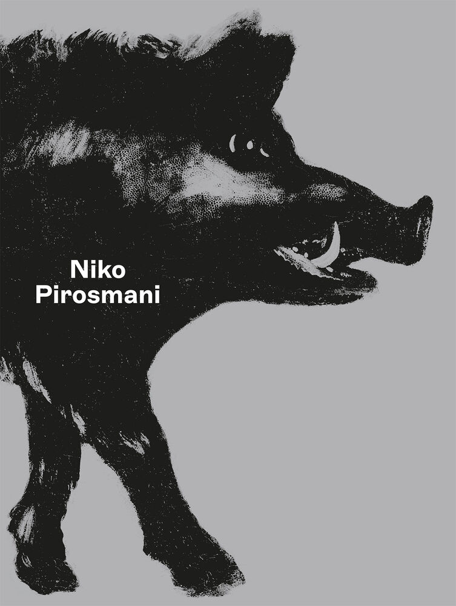

In 1969, a film titled - Pirosmani - was made

In 1983 Edward Kuznetsov produced the first catalogue raisonné on Pirosmani's work, entitled Niko Pirosmani.
- 1931 - Exhibitions of his work have been held in Kyiv
- 1968 - Warsaw
- 1931 - Paris (The Louvre)
- 1969 - Vienna
- 1983 - Nice and Marseilles
- 1986 - Tokyo
- 1995 - Zurich
- 1999 - Nantes
- 2002 - Turin
- 2008 - Kyiv
- 2008 - Istanbul
- 2008–2009 - Vézelay and Vilnius
- 2018–19 - Vienna
- 2023–2024 - and Basel (Foundation Beyeler)
Exclusive
Niko Pirosmani - Roe Deer and Landscape, 1913
500 pieces
| Availability | In stock |
| Price | CHF 19.80 |
| Art Club price (10%) | CHF 17.80 |
| Item # | 34715 |
To stand in front of originals and look at art one-to-one is always a very special experience. To keep the impressions of your visit fresh in your mind and art a presence in your daily life, too, the Fondation Beyeler offers a variety of products featuring reproductions of works from the exhibition. The selection ranges from cards, posters and notebooks to scarves, cups, glasses and more. These products are also wonderfully suited as stylish gifts for art-loving friends and relatives.
Today, 146 of his works are shown in the Art Museum of Georgia and sixteen paintings are exhibited in the Historical-Ethnographic Museum of Sighnaghi. Works by Pirosmanashvíli are part of the Zander Collection in Cologne.[7] A monument was installed in Tbilisi. There is also the Niko Pirosmanashvili Museum in Mirzaani, Georgia, in one of his abodes.[8]